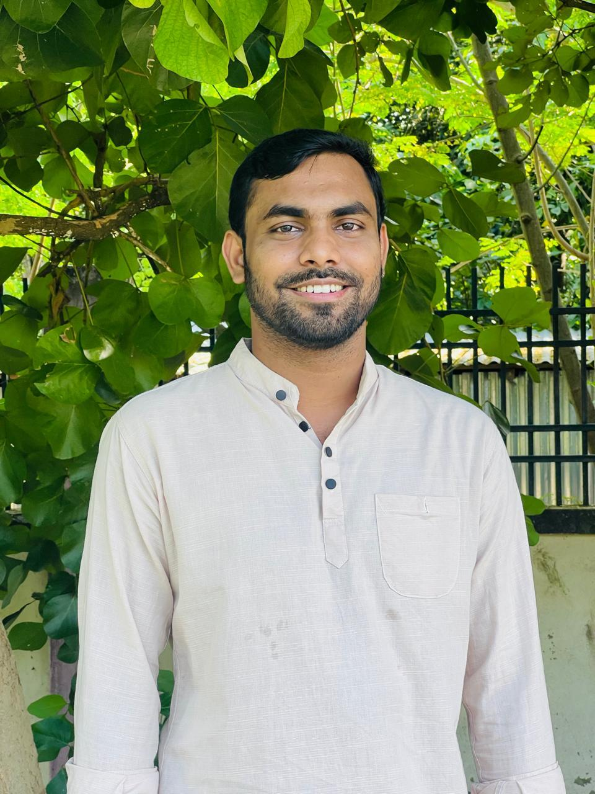

I am an interdisciplinary researcher with interests in social sciences, anthropology, sociology, cultural studies, marriage and family studies, gender and digital violence, quantitative methods, and sexuality.

I am an interdisciplinary researcher working across the social sciences and Asian studies, with academic interests in marriage and family studies, child marriage, forced marriage, gender-based violence, digital violence, cultural studies, bibliometric analysis, quantitative and qualitative research, and contemporary social issues. My research employs quantitative, qualitative, bibliometric, spatial, and mixed-method approaches to investigate complex social and cultural phenomena, with a particular interest in connecting empirical research from Bangladesh and South Asia with broader international scholarship. I am currently pursuing advanced academic studies in Japanese and Asian Studies and developing interdisciplinary research at the intersection of society, culture, language, and contemporary social issues.
Child marriage, forced marriage, contract marriage, family dynamics, marital relationships, and life-course perspectives.
Sexual harassment, gender-based violence, technology-facilitated violence, online dating violence, and digital abuse.
Bibliometric analysis, science mapping, research trends, thematic evolution, citation analysis, and knowledge structures.
Japanese studies, South Asian society and culture, language, intercultural studies, and contemporary Asian societies.
GIS and spatial mapping, statistical analysis, survey research, demographic analysis, and mixed-method research.
Bengali language and culture, Sanskrit influence, translation, intercultural communication, and socio-cultural studies.
SN Social Sciences, 2025
Indexed in: Scopus | Web of Science
Cogent Social Sciences, 2026
Authors: Md Ashraful Amin & Md Amirul Islam
National-level visualization and local realities of child marriage in Bangladesh using mixed methods, spatial mapping, and empirical investigation.
Bibliometric analysis and empirical investigation of sexual harassment among adolescent girls, with a focus on social and contextual factors.
Investigation of historical and contemporary traces of Sanskrit influence in Bangladesh, language, culture, and society.
Research examining climate perceptions, climate impacts, adaptation strategies, and barriers among farming communities in Bangladesh.
Research Assistant | 2023–2024
“Production of Safe Food in the Homestead to Improve the Living Standards of the Physically Challenged and Widows,” funded by the Ministry of Planning, Bangladesh.
Islam, M. A. 8th International Mediterranean Scientific Research Congress, 13–15 August, Antalya, Turkey.
Islam, M. A., & Khatun, B. 7th International Boğaziçi Scientific Research Congress, 03–04 May, İstanbul, Turkey.
Islam, M. A., & Khatun, B. Ahi Evran 5th International Conference on Scientific Research, 16–18 May, Dubai, UAE.
Book of Abstracts, p. 103.
Islam, M. A., & Khatun, M. 5th International Hasankeyf Scientific Research and Innovation Congress, 05–06 August, Batman, Turkey.
Book of Abstracts, p. 273.
Islam, M. A., Khatun, M., & Likhon, T. R. 3rd International Architectural Sciences and Application Symposium, 14–15 September, Naples, Italy.
Book of Abstracts, p. 208.
University of Rajshahi, Bangladesh.
University of Rajshahi, Bangladesh.
Khashkarara Degree College, Chuadanga, Bangladesh.
Ailhash Laxmipur High School, Chuadanga, Bangladesh.
You can find my academic publications, research output, citation information, and researcher identifiers through the following platforms.
My academic CV provides an overview of my education, research experience, publications, conference presentations, academic activities, research skills, and professional experience.
I welcome academic collaboration, research discussions, scholarly communication, and opportunities for interdisciplinary research.